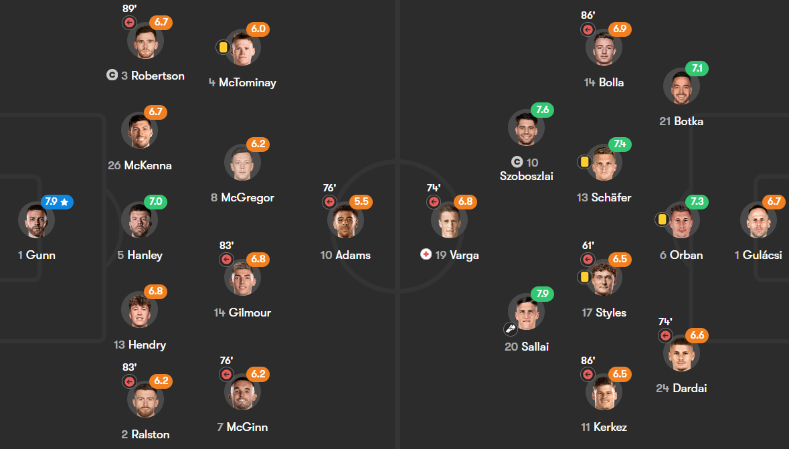
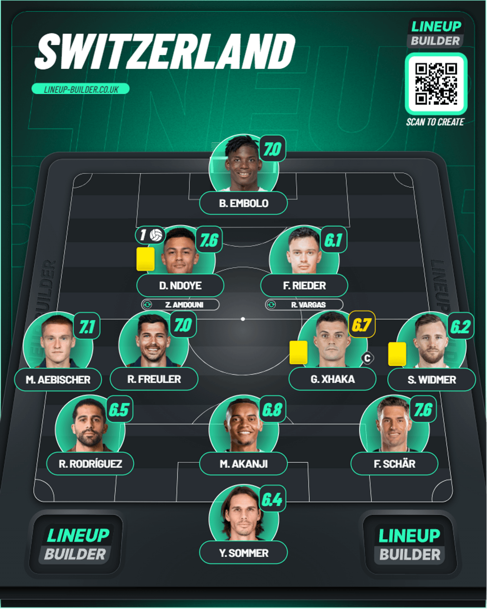
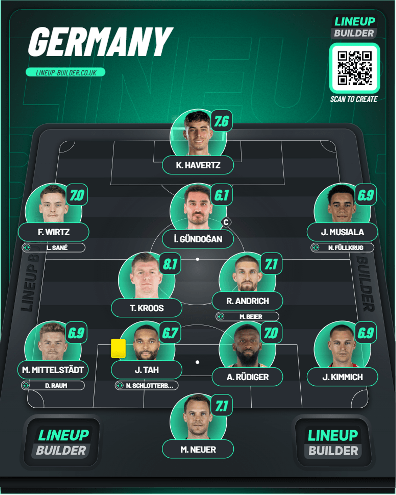

Day 10
Table of Contents
Day 10
Switzerland v Germany and Scotland v Hungary
So the thing I’m going to do here is since these went at the same time I’m going to do a side by side ticker of events. So with that we might have 6 statements to sum up these games. Let’s go.
Germany fail to make chances count. Fullkrug saves their blushes. Switzerland almost had Germany
All or nothing clash delivers. VAR controversy. Csoboth breaks Scottish hearts.
With these results, Germany avoid a scare from Switzerland to go through as group toppers with Switzerland following them. Hungary have a shot at going through as the 3rd place team but with the rest of the results we’ll know. Let’s get into it.
Play by play
Minute 8 - A save from Scotland as Hungary countered with Sallai and Styles when the latter found Bolla with a cross field pass and his low shot was parried well by Gunn.
Minute 17 - There is a goal from Germany and it’s Andrich. Mittelstadt’s cross from the left is cleared first but Wirtz got the ball and found Andrich in space and his shot from 25 yards beats Sommer’s hands and it’s in but hang on there is a VAR check….and it’s disallowed because there was a foul by Musiala on Aebischer with the former catching the latter on the ankle.
Minute 28 - It’s 1-0….to Switzerland actually and it’s Ndoye. Rieder found Freuler in the area before he went down the line and crossed it to find Ndoye who held his line and took his volley well finding the roof of the net. With this result SWITZERLAND are ahead of Germany by a single point now.
Minute 32 - A free kick by Szoboszlai is blocked well by the Scottish wall for a corner and Gunn punched out the corner
Minute 35 - Sallai has a go from range but it was sadly high and wide. Scotland giving him the space looked worrying.
Minute 40 - Hungary almost go 1-0 up Szoboszlai does a great dummy instead of going for the shot and crossed the ball to find Orban but his header clipped the crossbar from point blank range pretty much.
Minute 45 - Styles presses McTominay and won the ball who teed up Szoboszlai but his effort was just over the crossbar
Half time
With these results, Switzerland are going through as group winners and Germany in 2nd with Scotland having a shot in the best 3rd placed teams and Hungary are going out. Let’s get into the 2nd half
Minute 47 - What could have been for the Swiss. Rodriguez found Embolo who took it wide before he tried to slip Rieder through but he slipped after beating his marker which allowed Neuer to gather
Minute 49 - Szoboszlai played a good flick towards Sallai but his first time shot deflects off Ralston and into the gloves of Gunn
Minute 50 - Wirtz plays a brilliant pass from the middle to find Musiala in a pocket of space and he took a touch before getting a shot away but it was punched strongly by Sommer.
Minute 53 - Robertson and Adams combine well down the left and the latter tried to curl one from the edge of the box but it sails over the top
Minute 54 - Kroos tries a long range strike after a pass from Andrich but his strike is wide of Sommer’s right hand post
Minute 56 - Hungary have another counter attack and Szoboszlai finds Sallai who beat Ralston but the latter recovered to concede a corner blocking Sallai’s shot.
Minute 58 - A huge chance from Scotland as McGinn drove hard past multiple defenders and he tried to find McTominay but Orban was on hand to clear it
Minute 64 - Bolla is found by Szoboszlai on the corner and his cross for Dardai was annoyingly only hitting the top of the net.
Minute 67 - Sallai tries to latch onto a ball from Szoboszlai but Gunn was on hand to actually HEAD the ball away ahead of him.
Minute 69 - A moment of concern as a Hungary free kick was swung in by Szoboszlai but it didn’t find anyone and Gunn however wiped out both Ralston and Varga with the latter coming off worse as he is staying down for a concerning amount of time. There is a VAR check going on for a penalty and it looks like one but it’s not given. Varga is stretchered off and we hope he’s okay.
Minute 70 - In the middle of the stoppage in the other game, we have a CLUTCH block when Havertz plays in Wirtz at the byline and he found Kimmich on the edge of the box and he has a go but it’s blocked by Akanji but it found it’s way to Beier but his first touch is poor because of the tight marking by Rodriguez allowing Sommer to claim it easily.
Minute 79 - How was that not a penalty? McTominay’s run forward and set Armstrong free and there was such an awkward challenge from Orban where he looked to have clearly clipped Armstrong but there’s no VAR check either. Weird
Minute 83 - 2 offside moments. First Switzerland actually doubled their lead via Vargas after a great set of passes between Duah and Amdouni after a Sommer long kick ended with Vargas putting it in the net but the linesman had his flag up. Second was Gilmour’s throughball found Shankland but his shot was saved by Gulacsi and the offside flag was up anyways
Minute 88 - STRONG save from Neuer to keep Germany in it. Vargas held up play brilliantly inside the box before laying it to Xhaka who hit a menacing first time strike but Neuer made a solid stop to deny him.
We got 5 minutes in the first game and 10 in the second game in terms of stoppages
Minute 90+1 - Szoboszlai is in space from a ball by Adam and his shot is saved well by Gunn
Minute 90+2 - Germany HAVE EQUALISED. It’s Fullkrug the impact sub ONCE AGAIN. Gundogan found Raum in a pocket of space down the left and his cross went all the way to Fullkrug who sent a bullet header past Sommer into the top corner. Germany have regained top spot with that equalizer. How important is that from Fullkrug.
Minute 90+3 - Off the post from Hungary. The Scottish defense are all over the place as Csoboth is played through but his low shot goes past Gunn and hits the far post before being cleared.
Minute 90+5 - Full time for Germany and Switzerland as they are confirmed to go through in one and two respectively.
Minute 90+6 - The second game still has life left in it. Hendry found Morgan and his cross to the box found McTominay but his shot is skewed horribly wide but the offside flag saved his butt from that awful miss anyways.
Minute 90+8 - SAVE from Gulacsi. Armstrong kept the ball alive and put a cross to Christie and him and McTominay combine to tee Hanley up but his curler is saved brilliantly by Gulacsi.
Minute 90+10 - Csoboth WINS IT FOR HUNGARY WITH THE LAST KICK OF THE GAME. The absolute scenes as they might have booked their ticket as part of the best 3rd placed teams is alive. The Scotland corner is scrappy but it fell to Hungary and they countered. Csoboth and Sallai teamed up well and the former made a late run into the box and Sallai found him and he found the bottom left corner. I asked ChatGPT to summarize this in the style of Peter Drury, and I think I’m pretty happy with what it gave me:
“With destiny beckoning, Hungary unleash their final gambit! A corner turned melee in the Scottish box, chaos ensues, and it’s Hungary who emerge! Csoboth, the orchestrator, deftly combining with Sallai, who finds him with a visionary pass! The youngster times his run to perfection, arriving with immaculate precision to meet the low cross! Oh, what a moment! Hungary’s hearts explode with joy, while Scotland’s hopes dissolve in agony! It’s heartbreak for the Scots, ecstasy for the Magyars! Hungary, against all odds, may just have booked their ticket onward! Football’s drama, its theater, and its cruel majesty, all on display here tonight!”
Full Time
With these results, Germany are confirmed as group winners with Switzerland following in 2nd. Hungary are 4th in the battle of the 3rd placed teams and still could go through if results go their way in the other games let’s see.
Players of the Matches - G. Xhaka and R. Sallai
Xhaka - Had control over this game and almost masterminded a famous win over the hosts but it wasn’t to be.
Sallai - Kept working hard all through the 90 and had to be patient in playing the match winning pass but he played it and got the points for his country in the end. Really well played.
Lineups


